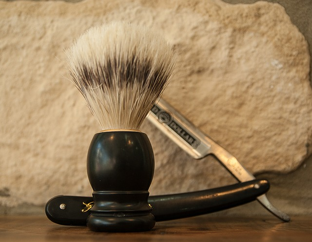

Para qué sirve el Front-end
Sirve para que un usuario pueda entrar a una web cualquiera, ya que es la parte que este ve y con la que este interactúa al acceder. Debe estar diseñado para ser fácilmente utilizable y también muy atractivo. De hecho, de su usabilidad y su estética depende la imagen que se transmita de la firma en cuestión en el plano digital.
Si consigue una buena experiencia de usuario, puede hacer que este se quede más tiempo e incluso que traiga a otros, algo que da más visibilidad a cualquier negocio y, por supuesto, ayuda en la generación
.Ubicación
Estamos localizados en esta dirección
Lenguajes del frontend
- JavaScript
- CSS
- HTML
- VUE
- jQuery
- SASS